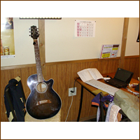

只今「臨機」のCMソングを制作中! 完成したらこのサイトにアップしま〜す!

ワタル
1980年代よりフリーライターとしてさまざまなジャンルの人物をリポート＆プロモーション。現在は久保田利伸の仕事を中心に、オフの日はラーメン店のおやじとして厨房に立つことを人生の生きがいとしている。
只今「臨機」のCMソングを制作中! 完成したらこのサイトにアップしま〜す!
早朝の井の頭公園。台風の翌日で、秋の青空が高く抜けていた。
ネコは好きじゃないけど、ついついカメラを向けちゃうのだ。
マニアにはたまらない開店前の「いせや」!
意外と知られていない井の頭自然文化園。小さな子供のいるファミリーが楽しめる施設も充実の動物園だ。
海洋生物はいないけど、淡水生物はディスプレイも良い。水槽の撮影はフラッシュを発光させないのがコツ。
サル山って見ちゃうよね。気づいたら30分くらい経ってるの。
まさに森の哲学者。黄色い目が超インパクト!
入った瞬間に汗が噴き出し、あわてて飛び出した。デブを殺したかったら、温室に30分閉じ込めておけばいい。
日本で一番高齢のゾウ・はな子もいます。1949年にタイ王国から贈られ、還暦をすぎているのだ。
で、渋谷の繁華街にもゾウを発見! でも唐突すぎて、イマイチ意味が分からない…。
新宿に行くと、どーしても食べてしまうのが「満来」のつけめん。小田急ハルクの裏にあるから行ってみて!
パスモをよく落とす。拾った人が驚くよーに、こんな名前にしてみました。
マイ・ガーデンに赤トンボ。季節は夏から秋へ。秋から冬へ。デブの季節到来です。
アメリカで久保田利伸の活動を支えるKAZがニューヨークから一時帰国。なぜか醤油をよくこぼす!
西麻布のコンビニ。場所は一流だけど人種は三流なのだ。
西麻布には、犬のフンを捨てる人種とガキに英才教育をさせる人種が同居しているのだ。
ある門前に見事なザクロ。シュールな光景に、思わず流星号を停めて激写!
ハンバーガーは好きじゃないけどホットドッグは大好き! なぜマックは朝しか売らないんだよっ!?
最近、裏・下北沢の充実ぶりがスゴイ。でも駅周辺は大きな再開発があり、街の雰囲気はかなり変わりそう…。
裏・下北沢で見つけたアフリカ専門店で手に入れたアフリカの手漉き紙。箱もカワユイ!
約12×12cm。
＜応募方法＞
官製ハガキにて下記の宛先までお送りください。
〒106-8626 東京都港区西麻布1-14-2 疋田ビル302号
（株）ファンキー・ジャム「月刊ワタル画報11月号プレゼント係」
（締め切り／11月末日消印有効）